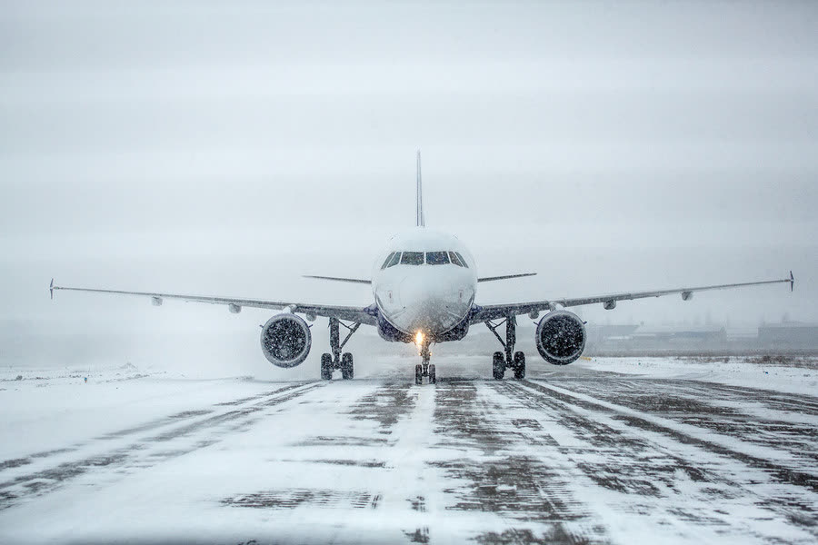

Apply AFM contaminant depth and crosswind limits for take-off.
Explain aquaplaning and estimate aquaplaning speed.
Plan for a rejected take-off and directional control on a slippery runway.

Take-off on a contaminated runway needs contaminated-runway performance data — and a clear plan for a reject.
Before you start
Obtain the latest RCR. Confirm that the contaminant type and depth are within the AFM limits for take-off.
Calculate performance using the contaminated runway data and the reported RWYCC: no assumed-temperature reduced thrust, and possibly a lower V1 and mass.
Apply the reduced crosswind limit for the runway condition (Operations Manual / FCOM table).
Brief the rejected take-off: decision speed, directional control technique, and the effect of reverse thrust in a crosswind.
Aquaplaning
When a tyre rides on a layer of water or slush, it loses contact with the runway. Braking and steering become almost useless. The approximate minimum speed at which dynamic aquaplaning starts is:
Rule of thumb
VP (kt) ≈ 9 × √(tyre pressure in psi) for a rotating tyre (take-off). For a tyre that is not yet rotating, as at touchdown, the speed is lower — about 7.7 × √(tyre pressure).
Example: tyre pressure 196 psi → √196 = 14 → about 126 kt for a rotating tyre, about 108 kt at touchdown.
Other forms include viscous aquaplaning (a thin film on a smooth or rubber-coated surface) and reverted rubber aquaplaning (a locked wheel overheating and producing steam).
During the take-off roll
Where the AFM requires it, carry out a static run-up to shed fan ice. On a slippery surface the brakes may not hold, so use the technique in the FCOM.
Apply thrust symmetrically. Keep straight with the rudder, using small nosewheel steering inputs at low speed only.
Expect slower acceleration in slush or wet snow, and spray striking the airframe.
Rejected take-off on a slippery runway
Stopping distances are much longer. Up to V1, reject for the reasons in your SOPs. Above V1, continue.
Use maximum braking (or the RTO autobrake) and maximum reverse thrust as the procedure states.
Reverse thrust in a crosswind pushes the aircraft downwind and makes it weathervane. If the aircraft starts to drift off the centreline, the typical technique is: reduce reverse thrust towards idle, release the brakes momentarily, regain the centreline with rudder and steering, then reapply braking and reverse. Follow your FCOM.
After take-off
Slush and snow thrown onto the landing gear, flaps and wheel wells can freeze at altitude. Some AFMs recommend specific actions after a take-off from a slush-covered runway, such as delayed retraction or cycling the gear. Apply them only when your FCOM states them.
Key takeaways
Check contaminant type and depth against AFM limits; use contaminated runway performance.
Aquaplaning speed ≈ 9 × √(tyre pressure) for a rotating tyre, lower at touchdown.
In a crosswind RTO, reverse thrust can push you downwind — know the recovery technique.
Knowledge check
Tyre pressure is 144 psi. Approximately at what speed could dynamic aquaplaning begin during the take-off roll?
About 72 kt
About 108 kt
About 144 kt
About 160 kt
Answer: B. 9 × √144 = 9 × 12 = 108 kt for a rotating tyre.
Training material only. It does not replace the Aircraft Flight Manual, FCOM, QRH, MEL or the Domestic Airlines Operations Manual, which always take precedence.